Laboratori 4: Configurant Git a la màquina virtual
Objectius
- Instal·lar i configurar Git a la màquina virtual.
- Replicar l’exemple de les diapositives utilitzant Visual Studio Code (VSCode) i Git.
Requisits previs
- Màquina virtual en funcionament (vegeu Laboratori 2).
- Visual Studio Code (VSCode) connectat a la màquina virtual mitjançant SSH (vegeu Laboratori 3).
Instal·lació de Git a la màquina virtual
Connecteu VSCode a la màquina virtual mitjançant SSH (vegeu Laboratori 3).
Inicia la sessió de l’usuari root amb la comanda:
su -El guionet
-és important perquè carregui correctament les variables d’entorn de l’usuari root.Com a usuari root. Instal·la el programari git amb la comanda:
apt install git -yUn cop finalitzi la instal·lació, comproveu la versió de git amb la comanda:
git --versionSortiu de la sessió de l’usuari root amb la comanda:
exit
Configuració de Git
Per començar a treballar amb Git, primer cal configurar el nostre usuari i correu electrònic. Aquesta informació s’utilitzarà per identificar els commits que fem al repositori. Per configurar el nostre usuari i correu electrònic, executem les següents comandes:
git config --global user.name "JordiMateo"
git config --global user.email "jordi.mateo@udl.cat"Replicació de l’exemple
Crearem un repositori nou anomenat projecte-final:
mkdir projecte-finalAccedim al directori del projecte:
cd projecte-finalo bé podeu fer click a Obre la carpeta a VSCode i seleccionar el directori projecte-final.
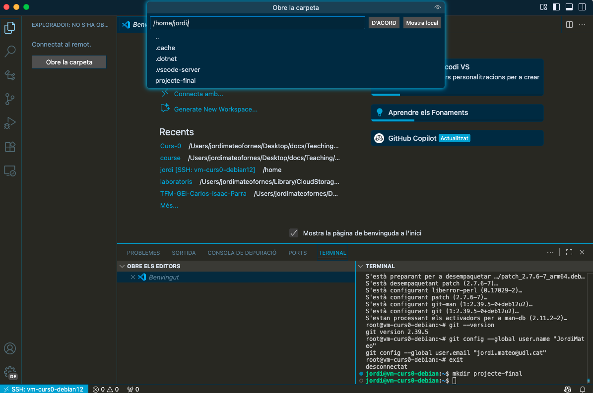
Crearem els 3 fitxers (treball.txt, figura1.png, figura2.png) i els afegirem al directori de treball:
echo "Aquest és el fitxer de treball." > treball.txt touch figura1.png figura2.png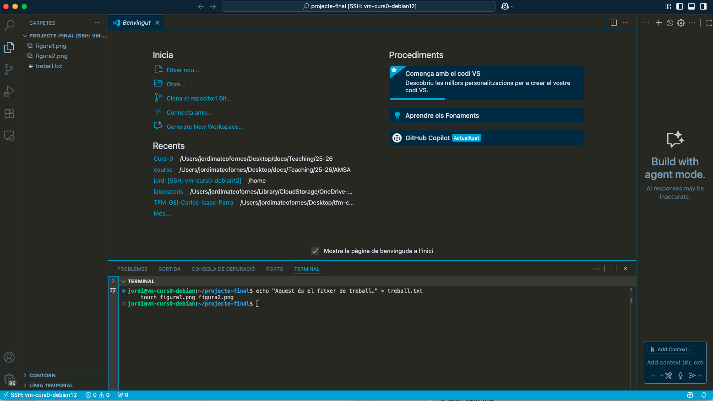
Ara inicialitzarem el repositori Git:
git init
o bé, podeu fer click a la icona de Git a la barra lateral esquerra de VSCode i fer click a Inicia el repositori Git.
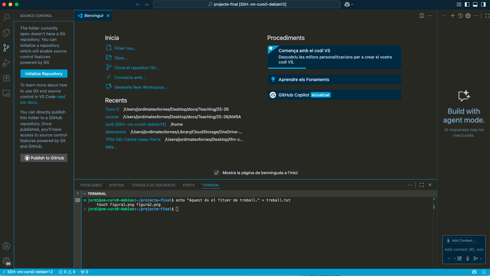
Si feu anar la línia de comandes, haures de posar els fitxers a la caixa d’espera (staging area) manualment.
git add .afegeix tots els fitxers del directori actual a la caixa d’espera.Si feu servir la eina integrada de Git a VSCode, us apareixerà una finestra emergent que us demanarà si voleu afegir tots els fitxers a la caixa d’espera (staging area). Feu click a Yes.
- Si us fixeu, veureu que VSCODE us indica que hi ha 3 fitxers nous que encara no s’han confirmat (posats al camió de mudances).
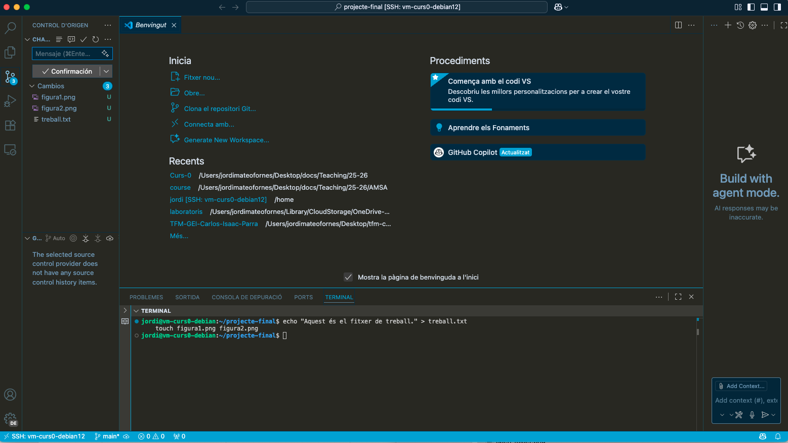
Ara farem el primer commit amb el missatge “Primer commit: Afegits els fitxers inicials”. Podeu fer-ho des de la línia de comandes:
git commit -m "Primer commit: Afegits els fitxers inicials"o bé, podeu fer click a la icona de Git a la barra lateral esquerra de VSCode, escriure el missatge del commit i fer click a la icona de check (✓) per confirmar els canvis.
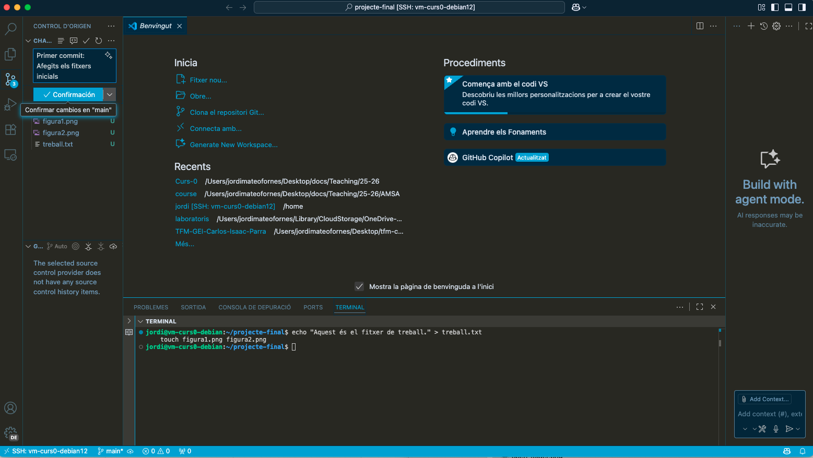
Observeu que després de fer el commit, els fitxers ja no apareixen a la secció de canvis pendents (Changes). I teniu la linia temporal inicialitzada amb un commit.
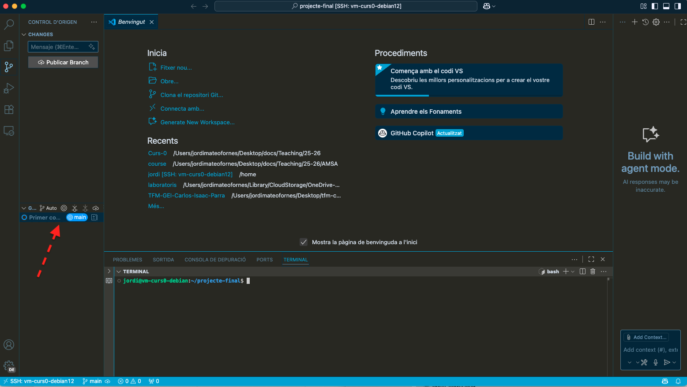
Farem un canvi al fitxer treball.txt:
echo "Afegit la introducció." >> treball.txt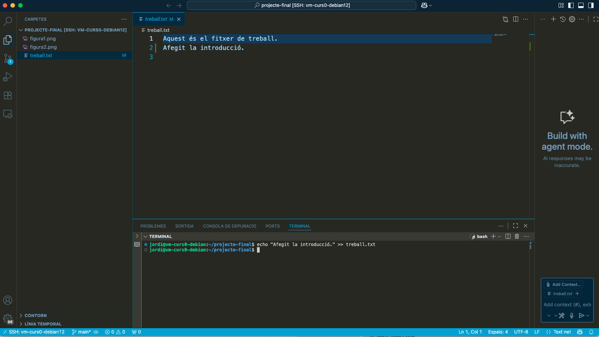
Com el document treball.txt ja està a la caixa d’espera, només cal que fem un nou commit:
git commit -am "Segon commit: Afegida la introducció al fitxer de treball"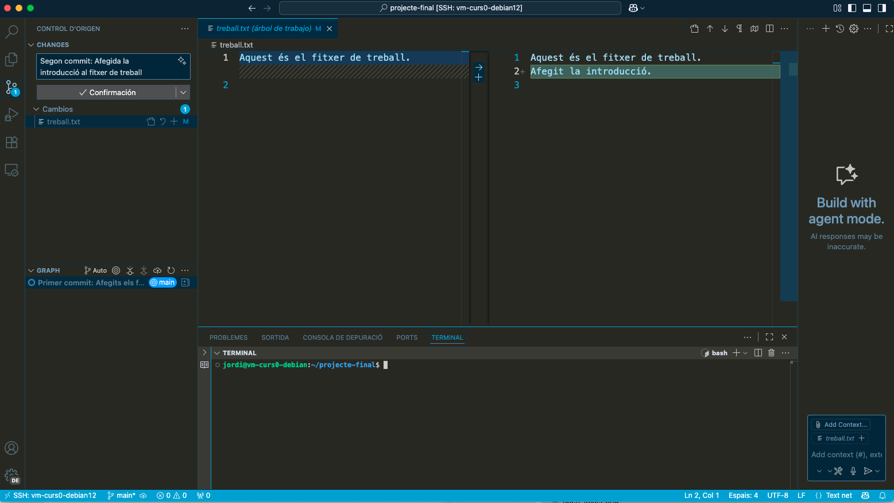
Ara podem veure l’historial dels commits fets fins ara:
git log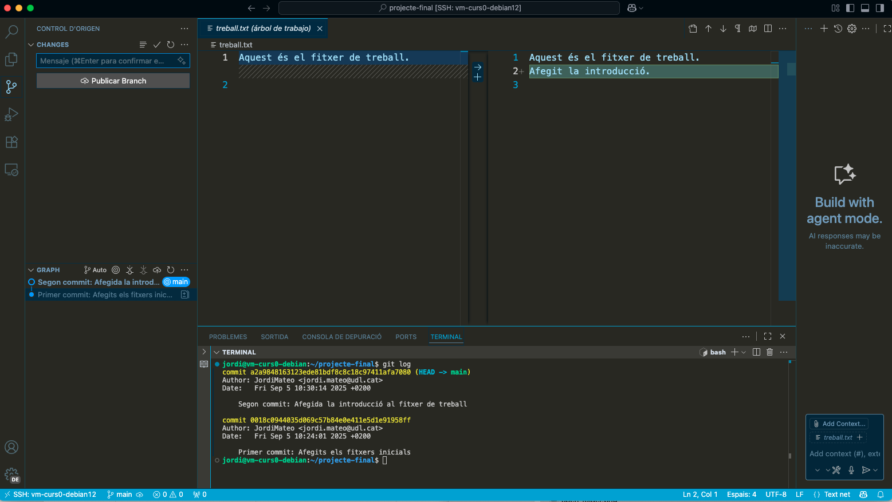
Podem tornar a una versió anterior si cal. Per exemple, per tornar al primer commit:
git checkout HEAD~1o bé, utilitzant VSCODE i fent click a la icona de Git a la barra lateral esquerra, després a la pestanya d’Historial (History) i fent click dret al commit on volem tornar i seleccionant l’opció Checkout.
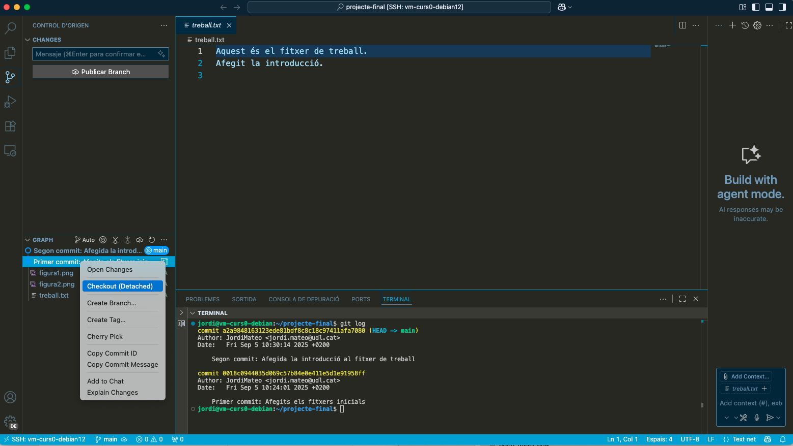
Quan fem un checkout a una versió anterior, el directori de treball es posa en la versió seleccionada, ara ja no tenim el text “Afegit la introducció.” al fitxer treball.txt. Això és perquè hem tornat a la versió anterior on aquest canvi no existia.
Per tornar a la versió més recent, fem:
git checkout main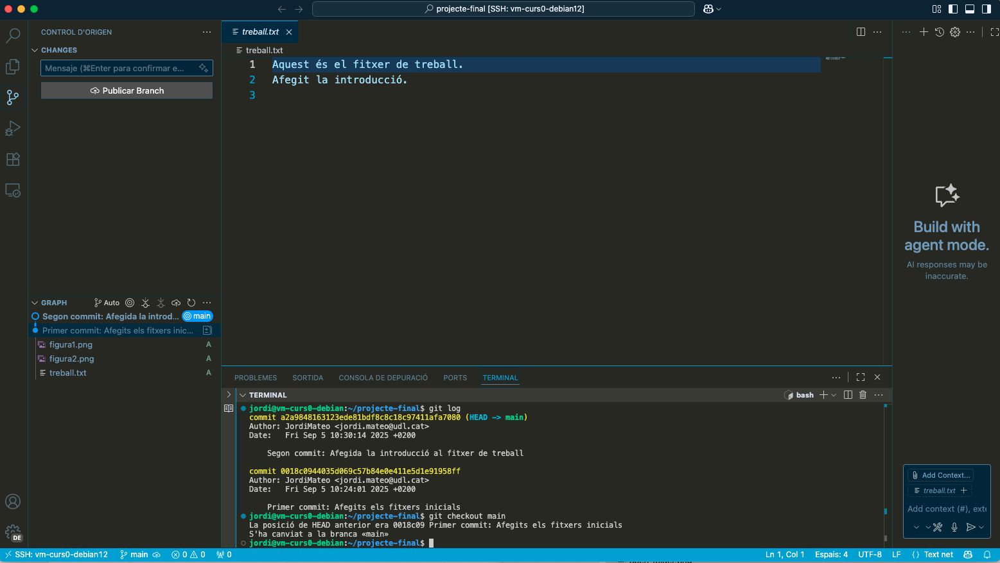
Quan fem un checkout a la versió més recent, el directori de treball es torna a la versió més nova, i ara tornem a tenir el text “Afegit la introducció.” al fitxer treball.txt.
Ara podem crear una branca nova per treballar en una nova funcionalitat:
git checkout -b metodologiao bé, utilitzant VSCODE i fent click a la icona de Git a la barra lateral esquerra, després a la part inferior esquerra on apareix el nom de la branca actual (main) i fent click a Create new branch.
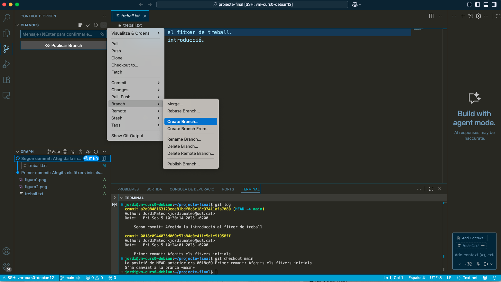
Farem un canvi al fitxer treball.txt a la branca metodologia:
echo "Afegida la secció de metodologia." >> treball.txt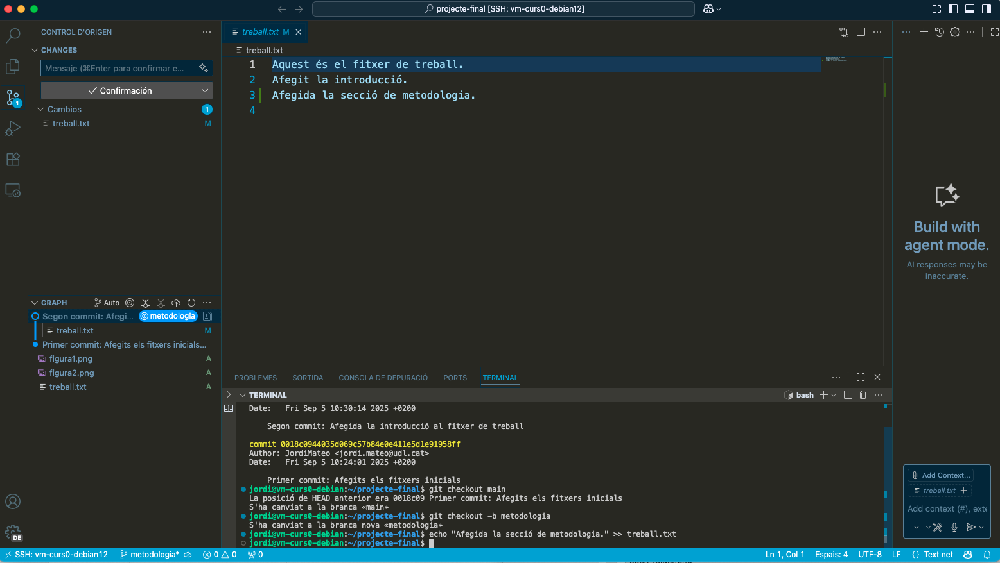
Fem un commit amb aquest canvi:
git commit -m "Afegida la secció de metodologia al fitxer de treball"Podem veure les branques existents:
git branch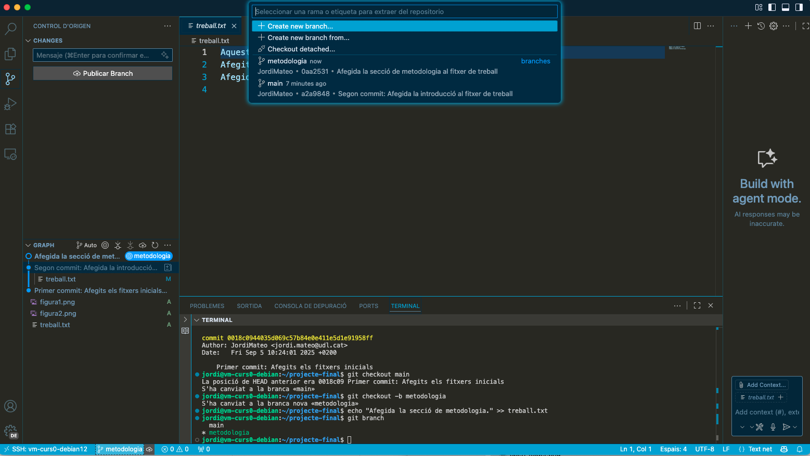
Per tornar a la branca principal:
git checkout mainPer anar a la branca metodologia:
git checkout metodologiaTambé podem fusionar la branca metodologia a la branca main:
git checkout main git merge metodologia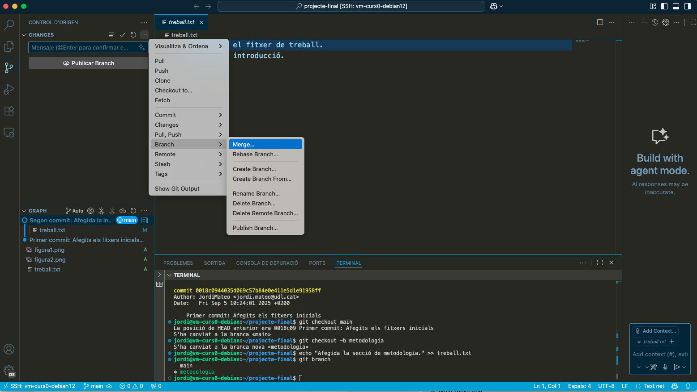
Amb això hem explorat les funcionalitats bàsiques de Git. Podeu continuar experimentant amb més canvis, branques i commits per familiaritzar-vos amb el flux de treball de Git.
Exercici Extra (opcional)
Podeu intentar superar els nivells del joc Learn Git Branching per practicar més les vostres habilitats amb Git. Centreu-vos en els exercicis MAIN.